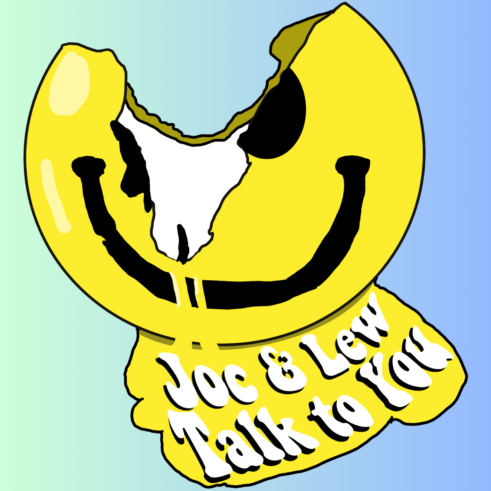

Joc & Lew review Siskel & Ebert’s review of Showgirls
We react to and talk about the iconic Siskel and Ebert and their WRONG!!!! take on the more iconic film Showgirls.
We react to and talk about the iconic Siskel and Ebert and their WRONG!!!! take on the more iconic film Showgirls.
Joc and Lew use the party game Pitchstorm to draw two random cards and try to come up with an idea for a movie on the spot. The upcoming Soccer Mafia blockbuster is going well until it’s time to draw a “Producer Note” card and things get derailed into a snow bank. We also talk about if it’s okay to make jokes about the Quad Cities after living here for almost 3 years.
We talk about Nosferatu and how happy we are for it’s success, then about going to a rowdy Twilight screening on New Years.